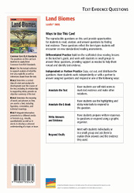

Online Resources
Online ResourcesRelated Resources
Text-Dependent Comprehension
Scaffolded Reading and Comprehension
Related Titles
Online Resources
Lexile® 900L
Land Biomes
Content Focus
Essential Question
Supporting Questions
Enduring Understanding
ELA Strategies and Skills
Text-Dependent Comprehension
Vocabulary
Writing to Sources
What Makes This Text Complex? | |
Purpose and Levels ➌ | The purpose of this text is to describe, compare, and contrast the different land biomes on Earth. (pp. 3–6)* |
Structure ➌ | The text includes multiple text structures including explanatory text, cause and effect, compare and contrast, and narrative text. (p. 7)* |
Language Conventionality ➌ | Text includes both simple and complex sentence structures. Domain-specific and academic vocabulary words are supported throughout. (p. 8)* |
Knowledge Demands ➌ | Basic knowledge of Earth, Life, and Physical Science is required. |
Qualitative text complexity dimensions from the CCSS are scored on the following scale:
➊—Low; ➋—Middle Low; ➌—Middle High; ➍—High
*Citations refer to pages within this teacher’s guide that address the specific text complexity.
LEXILE® is a trademark of MetaMetrics, Inc., and is registered in the United States and abroad.
Common Core Standards © Copyright 2010. National Governors Association Center for Best Practice and Council of Chief State School Officers. All rights reserved.
© Benchmark Education Company, LLC. All rights reserved. Teachers may photocopy the reproducible pages for classroom use. No other part of the guide may be reproduced or transmitted in whole or in part in any form or by any means, electronic or mechanical, including photocopy, recording, or any information storage or retrieval system, without permission in writing from the publisher.
Objectives
Informational Text
Life Science
Ecology
Support for English Learners
Support students to access the text by orally introducing academic vocabulary, language, and concepts
Scaffold the Reading
Scaffolded Preview
Introduction
Pages 4–5. The author invites us to visualize the towering trees of the redwood forest. A community of living organisms lives high in these branches. We also discover that redwoods supply lumber for houses and decks, which unfortunately is causing the forest to disappear.
Support for Struggling Readers
Support students to access complex text by having them first read the PRIME Bridges edition.
First Read Read Chapter 1
Land Biomes Teacher’s Guide
Introduce the Text SL.6.1b, SL.6.1c
Preview and Make Predictions
Invite students to flip through the book and view photos, or project the whiteboard version of the text and preview the pages together.
Have students turn to the Table of Contents and read the chapter heads and supporting questions for each chapter.
Invite students to read the book description and the About the Author blurb on the back cover.
Ask: How do these features help you figure out what you’ll learn about in this book?
Collaborative Whole-Group Discussion
Ask: What do you know about land biomes?
If your students need more support, use the Scaffolded Preview provided for each section.
Have students turn to pages 4–5, or display the pages on the whiteboard. Read aloud the text, or listen and follow along with the talking e-book in the whiteboard edition.
Invite students to quickly generate a list of questions they have about land biomes.
Choose the reading option that best meets the needs of your students.
For students who need more support with comprehension, consider scaffolding them into the on-level text using the PRIME Bridges Edition.
© Benchmark Education Company, LLC
Read Chapter 1 RI.6.2, RST.6.2, SL.6.1
Set a Purpose
If necessary, use the Scaffolded Preview and Cognates for Essential Vocabulary to help students access the text.
Read aloud the supporting question on page 6: How does climate influence the development of biomes?
Say: As you read this chapter, you will use a strategy called Q-Notes to help you understand how climate influences the development of biomes.
Display the Q-Notes sample shown in the right margin.
Say: The Q-Notes process is a form of note-taking. As you read, write down questions in the left column. You can do this by rewriting the headings, subheadings, and topic sentences as questions. Continue reading to find the answers, and record them in the right column of the Q-Notes chart. Q-Notes help you focus on the most important information in a text.
Read aloud page 10 and model how you use the Q-Notes format.
Have students create a Q-Notes chart on notebook paper, or distribute copies of BLM 1.
Show students how you form a question from the topic sentence, How does latitude affect climate? Write the question in the left column of the Q-Notes chart. Then have students read to find the answer. Have them record their answers in the right column, using a short answer, picture, or any form of note-taking that effectively helps them capture the information. Circulate to monitor and provide help as needed. Remind students that asking questions about what they read will help them focus on and summarize the key ideas in each chapter.
Summarize Key Concepts: Think and Write Together
Invite students to share their Q-Notes. What questions did they ask in the left column? Do the answers they recorded in the right column provide information needed to understand central ideas/concepts? Provide time for students to share and discuss their chapter summaries with the class.
Use the Sentence Frames to Support Collaborative Conversation for English learners.
As a group, construct a two- to three-sentence written summary of the key ideas in the chapter. If students need more support to summarize the text, explicitly model strategies for summarizing.
Model Summarizing
Say: When we summarize, we include only the most important information in a text. We look for the central ideas. We don’t include all of the details. Let’s summarize a section of this chapter together.
Reread page 8.
Say: This page is about how living things adapt to the climate where they live. I ask myself, “What is the central idea the author wants me to understand about how plants and animals adapt to the climates where they live?”
Allow responses. Support students to recognize that the author wants readers to understand how animals and plants adapt to certain climates. As part of the explanation, the author defines adaptation and she also describes how a climograph is used to show the pattern of temperature and precipitation in one location.
Say: In my summary, I will focus on the central idea. I will not include a definition of adaptation or describe the purpose of a climograph.
|
Climate affects animal and plant adaptations. In hot climates, some animals stay cool by burrowing underground during the hot day and feeding at night. Plants have adaptations for the heat, too, such as leaf coatings that keep them cool. Organisms also adapt to precipitation. In places with lots of rain, for example, plants have a leaf adaptation in which they release much of the water the roots have absorbed back into the atmosphere. Meanwhile, plants in dry climates store water or have very long roots to reach underground water. |
Sample Summary (Chapter 1)
© Benchmark Education Company, LLC
Land Biomes Teacher’s Guide
Support for English Learners
Scaffolded Preview
Chapter 1
Page 9. Look at the climograph. We’ll read how it shows patterns of temperature and precipitation.
Page 11. We’ll find out how Earth’s tilted axis causes different climates in tropical, temperate, and polar regions.
Pages 13-14. How do land and water features influence climate? We’ll find out in this chapter.
Cognates (English/Spanish) for Essential Vocabulary
adaptation/la adaptacíon (page 8)
altitude/la altitud (page 14)
climate/el clima (page 7)
polar/polar (page 10)
precipitation/las precipitaciones (page 8)
temperate/templado (page 10)
tropical/tropical (page 10)
|
Question |
Answer |
|
How does latitude affect climate? |
places near equator are tropical and warm all year round areas near north and south poles have long, dark winters and short, mild summers temperate regions are between tropical and polar, and they are cold in winter and hot in summer |
Sample Q-Notes
Support for English Learners
Sentence Frames to Support Collaborative Conversation
Based on my notes, I know _____.
Based on my notes, the chapter’s central idea is _____.
An important concept from this chapter is _____.
Support for Struggling Readers
Support students to access complex text by having them first read the PRIME Bridges edition.
Land Biomes Teacher’s Guide
© Benchmark Education Company, LLC
Read Chapter 2 RI.6.2, RST.6.2
Set a Purpose
If necessary, use the Scaffolded Preview and Cognates for Essential Vocabulary to help students access the text.
Read aloud the supporting question on page 16: What are the characteristics of each land biome?
Say: As you read this chapter, continue using Q-Notes to focus on the characteristics of each land biome. Then we’ll collaborate to summarize the main ideas and details.
Have students create a Q-Notes chart on notebook paper, or distribute copies of BLM 1.
Review the note-taking process as needed.
Choose the reading option that best meets the needs of your students.
Summarize Key Concepts: Think/Pair/Write/Share
Invite students to share their Q-Notes with a partner and agree on the key ideas in the chapter. Explain that partners should collaborate to write their own two- to three-sentence summaries of the key information in the chapter.
Use the Sentence Frames to Support Collaborative Conversation for English learners.
Support students to reread their notes and/or the chapter and to differentiate between the writer’s key ideas and the supporting details she uses.
Review the definition of a summary.
Say: Remember, a summary is a short statement of the most important information
in a text.
Bring students together and ask several pairs of students to share their summaries. As a whole group, evaluate the summaries and identify any key information that was omitted. As needed, clarify students’ understanding of the supporting question.
As a group, construct a written summary of the key ideas in the chapter.
|
Each biome has a community of living organisms adapted to its climate. The tundra is dry and cold with animals and plants adapted to its long winters and harsh wind. The taiga also has dry, cold winters. Its coniferous trees’ needle-shaped leaves shed snow and allow wind to pass through. In the temperate deciduous forest, trees shed their leaves in autumn and grow new leaves in spring. In the grassland, a whole year’s rain falls within a few weeks. Plants grow quickly during the wet season and rest during the dry period. In the tropical rain forest’s hot, wet season, which lasts most of the year, trees grow tall and thousands of species live together. The temperate rain forest with its mild, wet winters and cool, foggy summers is home to the largest trees on Earth. Birds, insects, and mammals are adapted to eat the trees’ leaves, seeds, and berries. Some desert biomes are hot and others are cold, but all are very dry. |
Sample Summary (Chapter 2)
© Benchmark Education Company, LLC
Land Biomes Teacher’s Guide
Support for English Learners
Scaffolded Preview
Chapter 2
Page 17. Look at the map of the world’s biomes. We’ll learn about each biome’s climate and adaptations of its organisms.
Pages 22-23. We’ll discover the differences between tropical and temperate rain forests.
Page 24. We’ll find out how desert plants and animals adapt to the hot, dry climate.
Cognates (English/Spanish) for Essential Vocabulary
desert/el desierto (page 24)
taiga (also known as a boreal forest and boreal is a Spanish word)
(page 18)
temperate/templado (page 19)
tropical/tropical (page 22)
tundra/la tundra (page 17)
Sentence Frames to Support Collaborative Conversation
Thick fur is an adaptation that helps animals_____.
The major land biomes are _____.
Based on my notes, the chapter’s central idea is _____.
Support for English Learners
Scaffolded Preview
Chapter 3
Page 32. Look at the chart. It identifies how various human actions affect natural communities.
Page 36. We’ll read how conservation efforts help prevent the destruction of biomes.
Conclusion
Pages 42–43. The conclusion returns us to the cool, wet redwood forest—a climate that results from its temperate latitude and proximity to the Pacific Ocean. We learn that the redwood forest is not the only temperate rain forest, and discover that places with similar climates develop similar living communities.
Cognates (English/Spanish) for Essential Vocabulary
conservation/la conservación
(page 30)
Sentence Frames to Support Collaborative Conversation
Based on my notes, the central idea for this chapter is _____ .
Intentional actions that affect natural communities include _____.
Some ways people accidentally affect a natural community are _____.
Conservation is an effort to _____.
Land Biomes Teacher’s Guide
Read Chapter 3 and Conclusion RI.6.2, RST.6.2
Set a Purpose
If necessary, use the Scaffolded Preview and Cognates for Essential Vocabulary to help students access the text.
Read aloud the supporting question on page 30: How can people preserve biomes for the future?
Set a purpose for the first read.
Say: As you read this chapter, continue using the Q-Notes strategy to focus on how people can preserve biomes for the future. Then we’ll collaborate to summarize the main ideas and details.
Have students create a Q-Notes chart on notebook paper, or distribute copies of BLM 1.
Review the note-taking process as needed.
Choose the reading option that best meets the needs of your students.
Summarize Key Concepts: Think and Write Independently
Give students a few moments to review their Q-Notes and to write their own two- to three-sentence summary of the key information in this chapter.
Use the Sentence Frames to Support Collaborative Conversation for English learners.
Bring students together, and ask several volunteers to read their summaries aloud. As a whole group, evaluate the summaries and identify any key information that was omitted. As needed, clarify students’ understanding of the supporting question.
As a group, construct a written summary of the key idea in the chapter.
Reread the summary that your class has collaborated to write.
|
Human activities—both deliberate (e.g., hunting, cutting down trees) and accidental (e.g., grazing animals)—have devastating effects on the world’s biomes. Conservation is one way to protect Earth. The most successful conservation efforts set limits on the use of resources, preserve species and environments, and balance the needs of people and wildlife. |
Sample Summary (Chapter 3)
© Benchmark Education Company, LLC
Close Reading Option 1: Identify and Describe Comparisons and Contrasts RI.6.3, RST.6.5, RST.6-6.9
Model Finding Text Evidence
Display and read aloud the close reading question.
|
The author compares and contrasts biomes. What evidence can help you identify comparisons and contrasts in a text? |
Explain that the question asks the reader to use strategies to identify comparisons and contrasts.
Say: To identify comparisons and contrasts in a text, I look for certain words that signal how two or more things are alike (comparisons) and/or how they differ (contrasts).
Reread the last paragraph on page 8 and the first paragraph on page 9 as students
follow along.
Say: The author compares and contrasts plants in wet and dry land biomes. She explains that both are adapted to the amount of precipitation their biome gets. The phrase on the other hand at the end of page 8 signals a contrast: plants in wet places release water, while the dry biome plants store water.
Support Practice
Ask students to turn to page 23.
Collaborative conversation (turn and talk). Ask students to turn to a partner and reread the section “Temperate Rain Forest”.
Ask: What is one way tropical and temperate rain forests differ? What word signals this contrast?
Bring students together and invite pairs to share the contrast they found. Agree upon the key idea of the contrast.
Find Text Evidence Independently
Ask students to reread the section “Deserts” on page 24 to contrast the rain forest and desert and to contrast deserts with each other. Students should look for signal words, record their findings, and identify a new understanding based on the compare-and-contrast relationship.
Confer with individual students to support their independent close reading. Encourage them to explain how identifying comparisons and contrasts contributes to their understanding of land biomes.
© Benchmark Education Company, LLC
Land Biomes Teacher’s Guide
Close Reading and Analysis
Close Reading Options
Support students to dig deeper into the text. Choose one or more of these close reading options, or choose an alternate focus that addresses students’ needs.
Routine for Finding Text Evidence
|
Plants in Wet Biomes |
Plants in Dry Biomes |
|
adapted to amount of precipitation |
adapted to amount of precipitation |
|
release water |
store water |
Sample Compare and Contrast Graphic Organizer
Land Biomes Teacher’s Guide
Close Reading Option 2: Use Context Clues to Determine Word Meaning RI.6.4, RST.6.4
Model Finding Text Evidence
Display and read aloud the close reading question.
|
What context clues can help a reader understand the meaning of the term climate on page 7? |
Explain that the question asks the reader to identify evidence in the text that can help define the term.
Say: This text uses words and phrases specific to land biomes. To figure out their meaning, we look for evidence in the text. Evidence can be direct definitions, synonyms, examples, or descriptions. We’re going to read closely to figure out the meaning of words using context clues. Knowing how to do this will help us read many kinds of complex texts.
Reread the second paragraph on page 7. Highlight the term climate.
Say: The author provides a direct definition of climate: “average weather pattern of an area over a long period of time.” I can confirm the definition of climate in the glossary.
Support Practice
Have students turn to page 8.Display and highlight the term precipitation.
Say: Let’s close read the text where this word appears, and look for context clues to help us figure out the meaning.
Collaborative conversation (turn and talk). Say: Turn to a partner. Reread the last paragraph and identify evidence from the text that help you define the term precipitation. Write down a definition of precipitation to share with the class.
Bring students together and ask several pairs to read aloud their definition. Check the glossary to confirm the definition.
Close Read Independently
Ask students to close read the section “Hot Deserts” on page 24 and write down evidence from the text that can help them define the word estivation. Students should write down evidence and their definitions, then check them against the glossary. Confer with individual students to support their independent close reading.
© Benchmark Education Company, LLC
Close Reading Option 3: Identify an Author’s Claim and Supporting Evidence RI.6.8, RST.6-6.1
Model Finding Text Evidence
Display and read aloud the close reading question.
|
What evidence supports the author’s claim that areas that get their winds and weather from the ocean tend to have a mild climate? |
Explain that the question asks the reader to find evidence in the text that supports the author’s claim.
Say: I’m going to show you how I read closely to evaluate an author’s argument or claim. To evaluate the validity of an author’s claim, I need to identify evidence in the text that supports it.
Reread page 13 while students follow along.
Say: The author provides evidence to support the claim that areas that get winds and weather from the ocean tend to have a mild climate. To support this claim, she gives the example of Juneau, Alaska, which is on the Pacific coast. We learn that Juneau has cool, wet winters while inland areas south of Juneau, such as St. Louis, Missouri, are much colder because they are further from the ocean.
Display a blank graphic organizer like the one in the margin. Write the argument or claim in the left column, and then ask students to recall evidence in the text that directly supports the argument.
Complete the graphic organizer.
Support Practice
Read aloud the section “Tundra” on page 17 as students follow along. Display a blank graphic organizer like the sample in the margin.
Collaborative conversation (turn and talk). Say: Think about the author’s claim that animals and plants of the tundra are adapted to the long winters and harsh wind. Find evidence in the text to support that argument. Talk to your partner, and complete a graphic organizer.
Find Text Evidence Independently
Ask students to reread page 34. Have them find evidence to support the author’s claim that global warming affects all of the planet’s biomes.
Ask: How did supporting the author’s claim with evidence from the text help your understanding of the concepts?
© Benchmark Education Company, LLC
Land Biomes Teacher’s Guide
|
Author’s Claim |
Supporting Evidence |
|
areas that get their winds and weather from the ocean tend to have a mild climate |
Juneau, Alaska, on the Pacific coast, has cool, wet winters even though it’s near the polar region St. Louis, Missouri, is farther south of Juneau but has colder winters (p. 13) |
Sample Author’s Claim
and Supporting Evidence
Graphic Organizer
Land Biomes Teacher’s Guide
Close Reading Option 4: Answer Text Evidence Questions RI.6.1, RI.6.2, RI.6.4, RST.6.1
Draw and Support Inferences
Display and read aloud the close reading question.
|
What evidence from the text supports the inference that making metal cans uses energy and requires mining? |
Text Evidence: “…many people choose to recycle metal cans. These people know that recycling reduces the environmental effects of mining and the energy needed to make new metal products.” (p. 36) RI.7.1, RI.8.1
Identify and Determine Central Idea and Key Details
Display and read aloud the close reading question.
|
Find text evidence to support the claim that many of the changes people make in natural communities are intentional. |
Text Evidence: “People plan before they cut down trees, clear forests, and hunt animals.” (p. 32) RI.7.2, RI.8.2
Determine Word Meaning
Display and read aloud the close reading questions.
|
How is the term global warming used in this book? What context clues help the reader understand the meaning of the term? |
Definition: an increase in a planet’s temperature caused by gases in the atmosphere trapping heat on the planet’s surface
Text Evidence: “Earth’s climate is getting warmer ” (p. 34) RI.7.4, RI.8.4
© Benchmark Education Company, LLC
Build Language and Vocabulary
Extend Language Concepts: Imperatives L.6.1
Read the following sentence from page 7:
“Think of a place that is very hot and dry.”
Say: This sentence is an imperative because it instructs readers to do something.
Imperative sentences give commands or instructions, and they almost never have a subject because they address the reader directly. In this sentence, the author commands students to “think of a place that is very hot and dry.” Have students work in pairs to look through the book for additional examples of imperatives. Ask students to share their findings. Monitor and provide feedback as necessary. Record the imperatives on a chart to refer to throughout the rest of the unit.
Turn and talk. Challenge partners to compose sentences with different imperatives based on information in the text. Have partners share their sentences with the rest of the class and explain how the imperatives affect their sentences.
Extend Language Concepts: Conjunctions (but) L.6.1
Read the following sentences from page 13:
“St. Louis, Missouri is far south of Juneau but has colder winters.”
Say: A conjunction is a word that connects two ideas. The word but is a conjunction that shows opposite or contrasting ideas. In this sentence, for example, the conjunction but contrasts the climate of St. Louis, Missouri and Juneau, Alaska.
Read the following sentence from page 24:
“Estivation is similar to hibernation, but it occurs in the summer.”
Say: In this sentence, the conjunction but contrasts estivation and hibernation.
Have students work in pairs to find more examples of the conjunction but as it’s used to contrast. Have them list the sentences in which the conjunction is used. As students share their findings, record them on chart paper under the title “Examples of Conjunctions.”
© Benchmark Education Company, LLC
Land Biomes Teacher’s Guide
Extend Meaning
Examples of Imperatives
Page 8. “Imagine a polar bear in the hot desert or a palm tree in Antarctica."
Page 12. “Cut out 3 pieces of paper, each 5 centimeters by 10 centimeters.”
Page 17. “Bring your camera—this will be an amazing trip!”
Page 40. “Choose a location on the globe.”
Examples of Conjunctions (but)
Page 22. “The hot, wet season lasts most of the year, but even during the short ‘dry’ season most rain forests still get rainfall.”
Page 23. “There are fewer species here than in the tropical rain forest, but the trees are the largest on Earth.”
Page 43. “Tropical rain forests are at least as wet as their temperate equivalents. But the tropical forest is much hotter.”
Interactive Activities
Independent Learning
Answer Key
Land Biomes Teacher’s Guide
Interactive Activities
Visit BenchmarkEducation.com for additional interactive personal learning activities.
Text Evidence
Question Card
Reading, Writing, Speaking, and Listening RI.6.1, RI.6.2, RI.6.4, RI.6.6, W.6.1, W.6.2, W.6.3, W.6.4, W.6.5, W.6.6, W.6.7, W.6.8, W.6.9, RST.6.7, RST.6.8
Practice Finding Text Evidence
Have students work independently or with a partner to answer questions that require them to find evidence in the text using the Text Evidence Question Card for
this book.
Writing to Sources
Use one of the text-dependent writing prompts below, or create one of your own, to give students the opportunity to demonstrate their understanding of the concepts covered in the text. Rubrics to help you evaluate students’ writing are available in the Digital Teacher’s Guide (BenchmarkUniverse.com).
Argument prompt. Imagine you are running for political office in your town. One of the big issues facing your community is air pollution caused by a local factory that is also the employer of many of your neighbors. Write a speech persuading the factory owner to make conservational efforts to reduce the damage the factory is causing, using examples from the book to support your argument. Make sure that your argument has a clear introduction and concluding section.
Informative/explanatory prompt. Write an essay comparing and contrasting two or more biomes. Use compare and contrast signal words in your essay.
Narrative prompt. Imagine you are the farmer in the African grassland with the failed crop, who is deciding whether or not to sell elephant tusks in order to feed his family. You are a humane person, who cares about animals, but you also don’t want your family to starve. Describe your struggle in a diary entry.
Collaborative Research
Have students collaborate to complete the research project outlined on the inside back cover of the text. Use the research project as a context in which to support students’ online research skills and to strengthen students’ presentation skills by requiring them to present their findings formally.
Closed-Book Content Assessment
You may wish to have students complete a formal content assessment available in this guide (BLMs 2 and 3) and online. This assessment helps you evaluate students’ understanding of the standards-based concepts developed in the text. More information about the question types and an answer key are also available online. An answer key is provided on page 13 of this guide.
© Benchmark Education Company, LLC
1. climates
2. Sample answer: You would look on or near the equator. These places are warmest year-round because they get more direct sunlight year-round.
3. Answers may include three of the following factors: land features (such as mountains and valleys), water features, nearness to the ocean, altitude, and distance from the equator
4. taiga
5. Sample answers should include at least two differences from those listed below for each biome:
|
desert |
tropical rain forest |
|
•very hot or very cold •dry—almost no rain •few plants, insects, and animals |
•hot all year •very wet—lots of rain •many plants, animals, and insects |
|
grassland |
tundra |
|
•cold in winter, hot in summer •long dry season •a lot of grass all year •no snow |
•very cold all year •very dry all year •grass only in short summer •snow much of year |
6. The United States has the largest grassland in North America.
7. humans
8. (Answers may vary.) Encourage the government to make new laws; recycle metal cans (page 36)
9. (Answers may vary.) Students’ responses should point out that climate affects all types of life in a biome, and that scientists need to track its variations in order to predict harmful effects on the planet.
10. (Answers may vary.)
• use of poisonous chemicals—harms plant and animal life
• cutting down forests—destroys habitats and threatens natural communities
• removing plants or animals from a natural community—causes species to become extinct
• overhunting animals—causes species to become extinct
• spreading disease around the world—threatens species of plants or animals with extinction
• riding off-road vehicles in restricted areas—harms fragile soils
• using carbon-based fuels—causes global warming
Sample conclusions:
• People’s activities are endangering Earth.
• People should act more responsibly to protect our planet.
• People need to recognize that their activities are having harmful effects on Earth.
Content Assessment
© Benchmark Education Company, LLC
Land Biomes Teacher’s Guide
Q-Notes Guide
Directions: Turn chapter titles, subheadings, and topic sentences into questions.
Write these on the left. Write answers to your questions on the right.
Use bullets, dashes, symbols, abbreviations, or jotted notes for your answers.
|
Questions |
Answers |
Land Biomes: Content Assessment
Directions: Use what you have learned about land biomes to answer the questions below.
Chapter 1
climates
Sample answer: You would look on or near the equator. These places are warmest year-round because they get more direct sunlight year-round.
Answers may include three of the following factors: land features (such as mountains and valleys), water features, nearness to the ocean, altitude, and distance from the equator
Chapter 2
taiga
The United States has the largest grassland in North America.
Chapter 3
humans
Answers may vary. Two possible answers include encourage the government to make new laws; recycle metal cans
What can you conclude about people’s activities that are affecting Earth?
Sample answer:
• use of poisonous chemicals—harms plant and animal life
• cutting down forests—destroys habitats and threatens natural communities
• removing plants or animals from a natural community—causes species to become extinct
• overhunting animals—causes species to become extinct
• spreading disease around the world—threatens species of plants or animals with extinction
• riding off-road vehicles in restricted areas—harms fragile soils
• using carbon-based fuels—causes global warming
• People’s activities are endangering Earth.
• People should act more responsibly to protect our planet.
• People need to recognize that their activities are having harmful effects on Earth.
|
desert |
tropical rain forest |
|
grassland |
tundra |
BLM 3